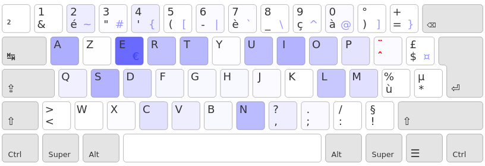
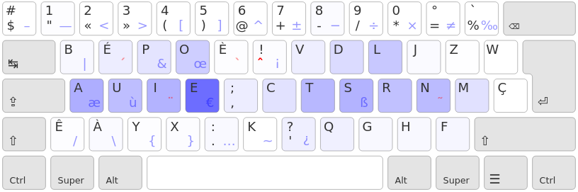
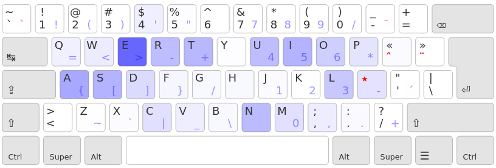
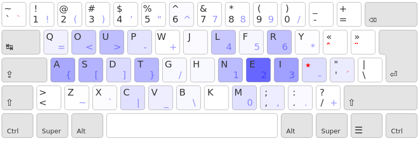

Ergo-L
Une disposition de clavier optimisée pour les développeurs francophones et les typographes exigeants.
Objectifs
- disposition optimisée pour le français et l’anglais
- couche AltGr optimisée pour l’enchaînement des symboles de programmation
- conservation des raccourcis usuels : Ctrl-{Q,A,S,Z,X,C,V}
- support de tous les caractères spéciaux utilisés en français (diacritiques, majuscules accentuées, lettres entrelacées, symboles de ponctuation…)
- chiffres en accès direct
Installation
Voir le dépot github
pour les instructions d’installation.
Licence
WTFPL
– Do What the Fuck You Want to Public License.
Optimisation
Les dispositions optimisées anglophones
Il y a eu plusieurs projets d'optimisation du clavier, toutes basées sur un réarrangement des touches du Qwerty.
- Dvorak: le tout premier et le plus connu, toutes les voyelles sont sur la main gauche ;
- Colemak: une alternative moderne et plus optimisée qui conserve les raccourcis claviers du qwerty ;
- Workman: une alternative plus récente et encore plus optimisée (limite les mouvements horizontaux des doigts).
Les dispositions francophones
Pour la saisie des accents français, l'Azerty utilise principalement la rangée des chiffres, ce qui cause des extensions des doigts.

Bépo est une disposition type Dvorak (voyelle à gauche, perte des raccourcis claviers usuels) et qui place des lettres hors de la zone de saisie naturelle, notamment M, Z, W et Ç qui necessitent une extension de l'auriculaire droit. De plus, certains caractères spécifiques du français nécessitent la touche AltGr (Ù, Œ, Æ, tréma, points de suspensions…), ce qui complique certains enchaînements.

La touche morte « Lafayette »
Pour écrire tous les caractères du français sans nécessiter des extensions de doigt, le Qwerty-Lafayette utilise une touche morte à tout faire.

Ergo-L (Ergonomique-Lafayette) est une optimisation type Workman du Qwerty-Lafayette.

Ce projet est encore un travail en cours, certains caractères sont susceptibles de bouger pour améliorer l'équilibre de la heatmap. On envisage notamment de placer le E sous l'index droit, ce qui impose une refonte assez conséquente.
Contrairement à Bépo, la priorité reste d'éviter les touches à l'extérieur des zones de frappe naturelles, la heatmap est une optimisation secondaire mais on tient au principe du Workman (notamment éviter les extensions vers les colonnes du centre) et on apporte un soin particulier à la fluidité des enchaînements. En outre, on souhaite qu’Ergo-L reste meilleur que Qwerty pour l’anglais.
Ergo-L vs Bépo
Cette disposition poursuit les mêmes objectifs que Bépo, mais d’une façon différente.
Efficacité
Pour la saisie de texte français, les deux méthodes sont d’une efficacité similaire :
- heatmap comparable, mais avec un objectif différent :
- Bépo est typé « dvorak », i.e. les touches fréquentes sont étalées sur toute la home row
- Ergol est typé « workman », i.e. on évite les deux colonnes du centre
- meilleure répartition par doigt :
- Bépo charge surtout les index et les auriculaires (notamment l’auriculaire droit)
- Ergol répartit la charge sur tous les doigts, mais allège les auriculaires
- des enchaînements au moins aussi confortables que Bépo
Une approche différente de la saisie de texte
La philosophie d’Ergo-L est héritée du Qwerty-Lafayette :
- les lettres accentuées et ponctuation spéciales sont obtenues avec une touche morte :
- cela occasionne environ 3% de frappes supplémentaires en français
- la touche morte est sur la home row
- toutes les lettres se font en restant dans les 3×10 touches sous les doigts (y compris les Ç, Œ, Æ…)
- c’est moins intuitif que Bépo, mais favorise l’apprentissage en mémoire musculaire
- la couche AltGr est réservée aux symboles de programmation :
- tous les symboles de programmation sont en AltGr + main gauche
- accolades, crochets et chevrons sont sur les 6 touches les plus accessibles
- la disposition est optimisée pour les enchaïnements fréquents en programmation :
-> => (0) [0] [''] ("") {} ~/
Des avantages décisifs sur Bépo
- les raccourcis usuels du Qwerty sont conservés : Ctrl-{Q,A,S,Z,X,C,V}
- les chiffres sont accessibles en direct (oubliez le pavé numérique !)
- la disposition est adaptée aux claviers compacts (50% et 40%)
- le temps d’apprentissage est plus court (ça reste proche de Qwerty)
- meilleure ergonomie pour la programmation et la saisie de texte anglais